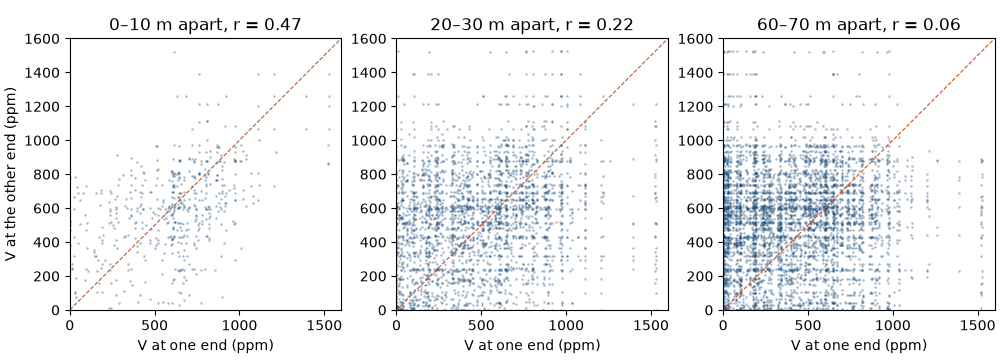
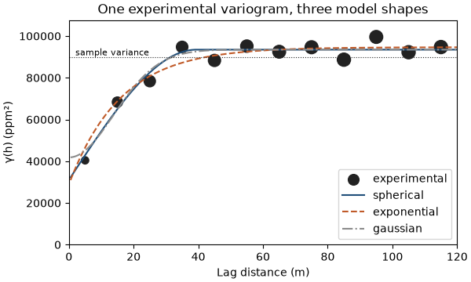
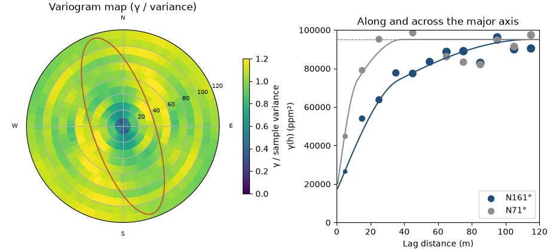

Note
Click here to download the full example code
Spatial continuity¶

- 1. Samples and support
- 2. Describing data
- 3. Spatial continuity
- 4. Kriging
- 5. Simulation
- 6. Checking a model
Two samples taken a meter apart tend to carry similar grades; two samples a kilometer apart may have nothing in common. The variogram measures how fast that resemblance fades with distance and direction, and the estimates and simulations of later chapters depend on it.
What you'll learn
- How pairs of samples at a lag h show spatial continuity, first in an h-scatterplot, then in the variogram.
- How to compute an experimental variogram, and what the lag and direction tolerances decide.
- What nugget, sill and range mean, and how the spherical, exponential and Gaussian models differ.
- How to find anisotropy with directional variograms and a variogram map, and describe it with an ellipse.
- Why a fitted model must be a valid, positive definite function.
Prerequisites: Samples and support and Describing data: samples, histograms, mean and variance.
import sys
from pathlib import Path
HERE = Path(__file__).parent if "__file__" in globals() else Path.cwd()
sys.path.insert(0, str(HERE.parents[1] / "examples"))
Near things are more alike¶
Geographers state the idea as a law: near things are more related than distant things. Figure 1 shows it on one east-west line of the Walker Lake exhaustive data. Two points 5 m apart differ by 35 ppm; the same point and one 60 m away differ by 401 ppm.
One pair proves nothing, so you look at all of them. This chapter uses the 470 Walker Lake samples of
V, in ppm, over a 260 × 300 m area; the last line of the cell reads the three values of Figure 1 from the
exhaustive data.
import boitata as bt
import matplotlib.pyplot as plt
import numpy as np
from common import ACCENT, GRAY, HIGHLIGHT, INK, save
samples = bt.datasets.walker_lake()
xy, v = samples.coords, samples["V"]
print(f"{len(v)} samples, mean {v.mean():.0f} ppm, variance {v.var():.0f} ppm²")
line = bt.datasets.walker_lake_exhaustive()["V"].reshape(300, 260)[149]
print(f"northing 150 m: V = {line[89]:.0f} at 90 m, {line[94]:.0f} at 95 m, {line[149]:.0f} at 150 m")
Out:
470 samples, mean 435 ppm, variance 89738 ppm²
northing 150 m: V = 414 at 90 m, 379 at 95 m, 13 at 150 m
Pairs at a lag¶
Pick a separation vector h, called the lag: a distance and a direction. Every pair of samples separated by about h gives one tail value and one head value (Figure 2). Plot the heads against the tails and you get an h-scatterplot.
The cell below builds all 110 215 pairs of samples and draws the h-scatterplot for three distance classes, ignoring direction for now.
i, j = np.triu_indices(len(v), 1)
distance = np.hypot(*(xy[i, :2] - xy[j, :2]).T)
print(f"{len(distance)} pairs")
fig, axes = plt.subplots(1, 3, figsize=(10, 3.6), layout="constrained")
for ax, low in zip(axes, (0, 20, 60)):
pair = (distance >= low) & (distance < low + 10)
head, tail = v[i[pair]], v[j[pair]]
r = np.corrcoef(head, tail)[0, 1]
gamma = 0.5 * np.mean((head - tail) ** 2)
print(
f"lag {low}-{low + 10} m: {pair.sum():5d} pairs, correlation {r:.2f}, half mean squared difference {gamma:.0f}"
)
ax.scatter(head, tail, s=3, color=ACCENT, alpha=0.4, linewidths=0)
ax.plot([0, 1600], [0, 1600], color=HIGHLIGHT, lw=0.8, ls="--")
ax.set(
xlim=(0, 1600),
ylim=(0, 1600),
xlabel="V at one end (ppm)",
title=f"{low}–{low + 10} m apart, r = {r:.2f}",
)
ax.set_aspect("equal")
axes[0].set_ylabel("V at the other end (ppm)")
save(fig, "h_scatter")

Out:
110215 pairs
lag 0-10 m: 526 pairs, correlation 0.47, half mean squared difference 40404
lag 20-30 m: 2963 pairs, correlation 0.22, half mean squared difference 78353
lag 60-70 m: 4934 pairs, correlation 0.06, half mean squared difference 92469
Pairs closer than 10 m cluster around the 1:1 line, with a correlation of 0.47. At 20 to 30 m the cloud widens and the correlation drops to 0.22; at 60 to 70 m it is 0.06, and the two ends of a pair are close to unrelated.
The last number on each line, half the mean squared difference between head and tail, grows as the cloud widens: 40 404, then 78 353, then 92 469 ppm². That number, computed for every lag, is the variogram.
The experimental variogram¶
The experimental variogram γ(h) is half the mean squared difference of all pairs in a lag class. It is small where near samples look alike and levels off where they stop resembling each other.
The math
For the \(N(h)\) pairs \((x_\alpha, x_\alpha + h)\) in a lag class,
The factor ½ makes γ(h) equal to the variance of the data at lags where the values are uncorrelated.
Scattered samples do not sit at exact multiples of h, so each lag collects pairs within tolerances (Figure 3).
The lag tolerance is half the lag spacing: with lag=10, the first class holds pairs from 0 to 10 m, the
second from 10 to 20 m. For a given azimuth, the angular tolerance (tolerance, 22.5° by default) opens a cone
around the direction, and the optional bandwidth caps its width far from the tail.
experimental_variogram is a function: it takes coordinates, values and the lag settings, and returns an
ExperimentalVariogram value holding lags, gammas and pair counts. The cell checks the first lag against
the formula above, computed by hand.
lag_size = 10.0 # @param {type:"slider", min:2, max:30, step:1}
omni = bt.experimental_variogram(samples, "V", lag_size, 120.0)
print(" lag pairs gamma")
for lag, count, gamma in zip(omni.lags, omni.counts, omni.gammas):
print(f"{lag:4.0f} {count:6.0f} {gamma:6.0f}")
first = distance < lag_size
by_hand = 0.5 * np.mean((v[i[first]] - v[j[first]]) ** 2)
assert np.isclose(by_hand, omni.gammas[0]) and first.sum() == omni.counts[0]
Out:
lag pairs gamma
5 526 40404
15 2072 68328
25 2963 78353
35 3201 94763
45 4035 88300
55 4273 95161
65 4934 92469
75 5200 94625
85 5544 88662
95 5126 99558
105 5576 92228
115 5544 94707
The first class holds 526 pairs and the later ones thousands. γ climbs from 40 404 at 5 m to about 94 000 by 35 m, then wanders around the sample variance of 89 738. Short lags carry the fewest pairs and matter most for kriging, so read their values with care.
Pitfall: lags without enough pairs
A lag class with a few dozen pairs gives a noisy γ that can swing a fitted nugget or range. Check counts
before trusting a point, and choose lag near the typical sample spacing so the first class fills up.
Nugget, sill and range¶
Three numbers summarize a variogram. The nugget is the jump at the origin: differences between samples so close together that the data cannot resolve them, plus measurement error. The sill is the plateau. The range is the lag where γ reaches the sill; samples farther apart than the range are uncorrelated.
Kriging and simulation need γ at every distance, not only at the lag centers, so you fit a model: a function from a short list of shapes known to be valid (Figure 4). The spherical model rises in a near-straight line and reaches the sill exactly at the range. The exponential model rises faster at the start and approaches the sill without reaching it; its practical range is where it reaches 95 % of the sill. The Gaussian model starts flat and suits smooth variables such as topography or thickness.
fits = {name: omni.fit(name, weighting="count/gamma") for name in ("spherical", "exponential", "gaussian")}
for name, fit in fits.items():
print(
f"{name:>11}: nugget {fit.nugget:6.0f}, sill {fit.sill:6.0f}, range {fit.structures[0].range:4.0f} m"
)
h = np.linspace(0, 120, 241)
fig, ax = plt.subplots(figsize=(6, 3.6), layout="constrained")
bt.plot.variogram(omni, ax=ax, color=INK, label="experimental")
for (name, fit), color, style in zip(fits.items(), (ACCENT, HIGHLIGHT, GRAY), ("-", "--", "-.")):
ax.plot(h[1:], fit.gamma(h[1:]), style, color=color, label=name)
ax.axhline(v.var(), color=INK, lw=0.8, ls=":")
ax.text(2, v.var(), "sample variance", va="bottom", fontsize=8)
ax.set(xlim=(0, 120), ylim=(0, 1.2 * v.var()), xlabel="Lag distance (m)", ylabel="γ(h) (ppm²)")
ax.set_title("One experimental variogram, three model shapes")
ax.legend(loc="lower right")
save(fig, "shapes")

Out:
spherical: nugget 31036, sill 93458, range 39 m
exponential: nugget 28925, sill 94638, range 48 m
gaussian: nugget 41808, sill 93468, range 34 m
All three shapes pass close to the points beyond 10 m. They disagree at the origin, where the data are thinnest: the spherical fit puts 31 036 ppm² in the nugget, the exponential 28 925 and the Gaussian 41 808, a third to nearly half of the sill. Those short-scale choices change kriging weights far more than the tail of the curve.
fit returns a Variogram, a value object: a nugget, a list of Structures (shape, sill, range) and an
anisotropy. It holds no data and no state, so you can print it, compare it, or pass it to any estimator.
Anisotropy¶
Walker Lake V follows elongated, north-northwest trending bodies. Along them grades stay similar over long
distances; across them they change fast. A variogram that depends on direction is anisotropic.
The variogram map computes γ for every direction and lag at once and shows the pattern as an image. For each of
36 directions variogram_map also fits a range, so the direction of the longest range, the major axis, is one
argmax away.
vmap = bt.variogram_map(samples, "V", 10.0, 120.0)
angle = vmap.angles[np.nanargmax(vmap.ranges)]
azimuth = (90 - np.degrees(angle)) % 180
print(
f"longest range N{azimuth:.0f}°: {np.nanmax(vmap.ranges):.0f} m; shortest {np.nanmin(vmap.ranges):.0f} m"
)
Out:
longest range N170°: 80 m; shortest 24 m
The map puts the major axis at N170° with an 80 m range, against 24 m in the shortest direction. Boitatá measures
angles one way throughout (Figure 5): azimuth clockwise from north, dip positive downward, z up. The ranges
along the three axes form the anisotropy ellipse (an ellipsoid in 3D); a Variogram stores the rotation of its
axes and the ratios of the shorter ranges to the major one.
Variogram.fit_directional fits one anisotropic model to experimental variograms in several directions at once:
the direction, the range ratio, and every sill and range.
azimuths = np.arange(0, 180, 22.5)
directional = [bt.experimental_variogram(samples, "V", 10.0, 120.0, azimuth=a) for a in azimuths]
model = bt.Variogram.fit_directional(
directional, [(a, 0) for a in azimuths], ["spherical", "spherical"], weighting="count/gamma"
)
print(model)
major = model.structures[-1].range
minor = major * model.ratios[0]
print(f"major axis N{model.rotation[0]:.0f}°, long range {major:.0f} m along it and {minor:.0f} m across it")
Out:
Variogram(nugget=16458.263904055566, structures=[Structure("spherical", sill=39532.539054973735, range=36.61762520915539), Structure("spherical", sill=39110.929672733, range=115)], rotation=(161.46015029654865, 0.0, 0.0), ratios=(0.33583545063941, 1.0))
major axis N161°, long range 115 m along it and 39 m across it
The joint fit turns the axis to N161°, nine degrees from the map's pick, and gives the long structure a range of 115 m along it and 39 m across it: a ratio of one third. The nugget falls to 16 458 ppm², because the short 37 m structure describes the fast early rise. The next figure overlays the ellipse on the variogram map and compares the model with the experimental points along both axes.
variance = v.var()
fig = plt.figure(figsize=(9.2, 4.2), layout="constrained")
a = fig.add_subplot(1, 2, 1, projection="polar")
gamma = np.where(vmap.counts >= 30, vmap.gammas, np.nan)
step = vmap.angles[1] - vmap.angles[0]
theta = np.r_[vmap.angles, vmap.angles + np.pi, 2 * np.pi] - step / 2
radius = np.r_[vmap.lags - 5, vmap.lags[-1] + 5]
mesh = a.pcolormesh(theta, radius, np.vstack([gamma, gamma]).T / variance, vmin=0, vmax=1.2, shading="flat")
t = np.linspace(0, 2 * np.pi, 361)
direction = np.radians(90 - model.rotation[0])
ellipse = major * minor / np.hypot(minor * np.cos(t - direction), major * np.sin(t - direction))
a.plot(t, ellipse, color=HIGHLIGHT, lw=1.4)
a.set_rlim(0, radius[-1])
a.set_xticks(np.radians([0, 90, 180, 270]), ["E", "N", "W", "S"])
a.tick_params(labelsize=7)
a.set_title("Variogram map (γ / variance)")
fig.colorbar(mesh, ax=a, shrink=0.7, label="γ / sample variance")
b = fig.add_subplot(1, 2, 2)
for az, color in ((model.rotation[0], ACCENT), (model.rotation[0] + 90, GRAY)):
exp = bt.experimental_variogram(samples, "V", 10.0, 120.0, azimuth=az)
bt.plot.variogram(exp, variogram=model, direction=(az, 0), ax=b, color=color, label=f"N{az % 180:.0f}°")
b.set(xlim=(0, 120), xlabel="Lag distance (m)", ylabel="γ(h) (ppm²)")
b.set_title("Along and across the major axis")
b.legend(loc="lower right")
save(fig, "anisotropy")

Across the axis (N71°) γ reaches the sill within about 25 m; along it (N161°) it climbs until about 100 m. The omnidirectional variogram of the previous section averaged these two curves and hid the difference.
Key idea
The variogram describes continuity as a function of both distance and direction. Look in several directions before you fit, and fit one model whose ellipse explains all of them.
The long range stops at 115 m, a little below the largest lag of 120 m; beyond the data, the fit has nothing to hold it. Reading such limits is part of the job: experimental variograms and variogram fitting walk through them.
A Variogram serializes to JSON and back without loss, so a model fitted today can travel with a report or feed
a run next month.
text = model.to_json()
print(text)
assert bt.Variogram.from_json(text).gamma([10.0, 50.0]).tolist() == model.gamma([10.0, 50.0]).tolist()
Out:
{"type":"Variogram","format":1,"nugget":16458.263904055566,"structures":[{"model":"Spherical","sill":39532.539054973735,"range":36.61762520915539},{"model":"Spherical","sill":39110.929672733,"range":115.0}],"anisotropy":{"azimuth":161.46015029654865,"dip":0.0,"rake":0.0,"major":1.0,"semi":0.33583545063941,"minor":1.0}}
Why the model must be valid¶
You cannot join the experimental points with straight lines and skip the fitting. Kriging combines samples with weights, and the variance of any weighted combination must come out positive. The covariance matrix built from the model has to be positive definite for every sample layout, and only some functions guarantee that.
A straight line from zero to the sill looks harmless. It is valid along a line and invalid in 2D. The cell builds the covariance of a 15 × 15 grid of points from that line, and from a spherical model with the same range, and prints the smallest eigenvalue of each matrix. A negative eigenvalue means some combination of the points has a negative variance.
grid = np.stack(np.meshgrid(np.arange(15.0), np.arange(15.0)), axis=-1).reshape(-1, 2)
lags = np.hypot(*(grid[:, None] - grid[None]).transpose(2, 0, 1))
straight = np.clip(1 - lags / 5, 0, None)
spherical = bt.Variogram([("spherical", 1.0, 5.0)]).covariance(lags.ravel()).reshape(lags.shape)
for name, covariance in (("straight line to the sill", straight), ("spherical", spherical)):
print(f"{name:>25}: smallest eigenvalue {np.linalg.eigvalsh(covariance).min():+.3f}")
Out:
straight line to the sill: smallest eigenvalue -0.303
spherical: smallest eigenvalue +0.119
The straight line gives −0.303: a weighted sum of these points would have a variance of −0.303 times the sill,
which cannot exist. The spherical model gives +0.119. Boitatá builds models only from valid shapes, and nested
sums of valid structures stay valid, so any Variogram you create or fit is safe to krige with.
Pitfall: a model that fits the points but not the physics
A curve through every experimental point is a worse model than a smooth valid one that misses a few. Invalid models give negative kriging variances and unstable weights, and the damage shows only downstream.
Check before you move on
- Why is the experimental variogram divided by two, and what does it approach at large lags?
- What would a variogram that is flat from the first lag onward say about the data?
- In which direction is Walker Lake
Vmost continuous, and what is the range ratio? - Why can't you use any curve that fits the experimental points as a variogram model?
See also
Next: Kriging turns the variogram into weights for estimating unsampled locations.
Total running time of the script: ( 0 minutes 0.600 seconds)
Download Python source code: learn_03.py